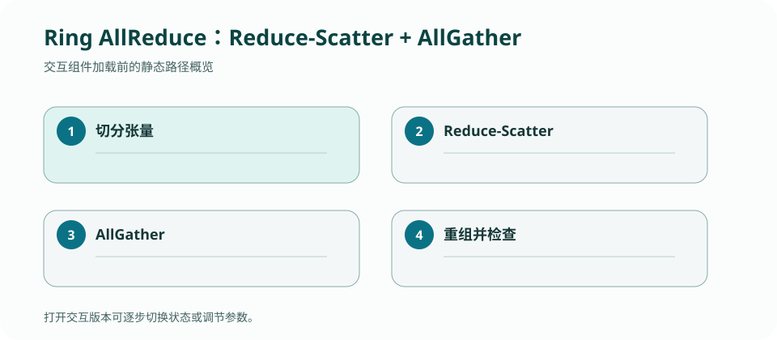

CS 168 · LECTURE 24 · 2026-11-24 · 群体通信
AI 训练让网络参与同步数十亿参数：collective 的目标不是简单“发完”，而是在拓扑带宽上均匀安排每个分块的移动与计算。
版本快照：Fall 2026 官方课表与在线教材，核对日期 2026-09-02；官网仍标注 under construction，日期与政策可能变化。
为什么朴素 parameter server 容易形成热点，而 Ring AllReduce 能让每个节点承担近似相同流量？
Broadcast 把一份数据复制到所有 rank；Reduce 把各 rank 输入按 sum/max 等结合到一个 root；AllGather 让每个 rank 收集所有分块；AllReduce 让所有 rank 得到归约后的完整张量。
操作语义与实现拓扑分开：同一个 AllReduce 可以用树、环或分层算法，正确结果相同，延迟/带宽成本不同。
有 \(P\) 个 rank、总数据 \(N\) bytes。ReduceScatter 运行 \(P-1\) 轮，每轮每节点向下一节点发送一块并累加，结束时每节点拥有一个已归约块。AllGather 再运行 \(P-1\) 轮传播这些块。
每节点总发送量约 \(2(P-1)N/P\)，随 \(P\) 增大接近 \(2N\)，避免单 root 承担 \(PN\) 热点。代价是 \(2(P-1)\) 个依赖轮次，对小消息 latency 不友好。
一次消息成本常写作 \(\alpha+n\beta\)：\(\alpha\) 是启动/软件延迟，\(\beta\) 是每 byte 传输时间。树算法轮数少，适合小消息；环算法带宽利用高，适合大张量。
模型还可加归约计算 \(n\gamma\)。选择算法前要知道消息大小、rank 数、链路层次和操作是否可结合/可交换。
GPU 间可能先经 NVLink/NVSwitch，再跨 NIC 与 leaf–spine。分层 AllReduce 先在机内归约、再跨机、最后机内分发，避免把慢链路重复使用。
逻辑 ring 顺序若忽略物理拓扑，会让多个逻辑边竞争同一上行。性能诊断要同时画 rank graph 与 physical path graph。
集合通信的算法成本来自每一步谁向谁发送哪个分块，适合状态步进。

P=4、张量 16 MB，手推 3 轮 reduce-scatter + 3 轮 all-gather，记录每轮每个 rank 持有的归约块与总发送字节。
检查：Ring AllReduce 对大消息带宽高效的主要原因是？
四个 worker 的 ring reduce-scatter 后各持一个完整 shard，再 all-gather
四个 worker 的 ring reduce-scatter 后各持一个完整 shard，再 all-gather；每一步发送/接收的 shard 与累加状态明确变化。
检查：判断一个实现分支是否必要，最有力的问题是什么？
检查：若把这一机制移到完全不同的网络位置，首先应重新确认什么？
手推 4 worker、4 shard 的两个阶段 timeline。
答案必须出现 packet/message、local state/table、触发 event、after state 与 output；只给定义不算完成。
正文是 CourseStack 的中文解释与重新绘制的教学例子；官方页面负责课程原始定义，历史仓库只提供你的实现证据。